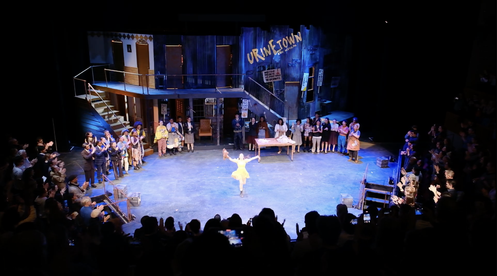
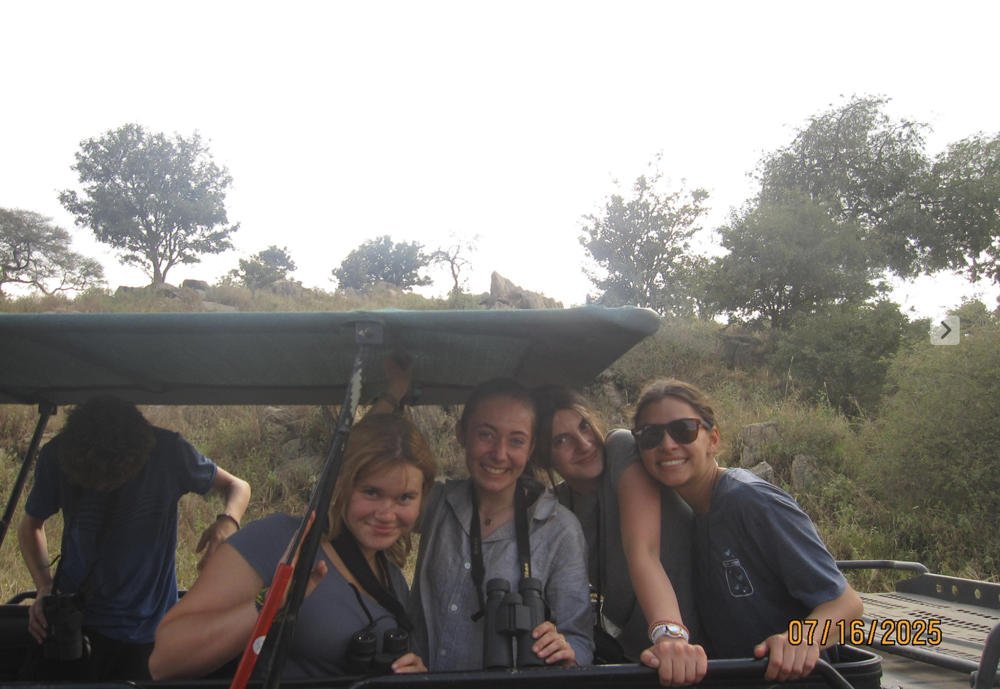

Urinetown Bows

Urinetown was my favorite Laguardia experience. Having the opportunity to work on a project where I got to share the silliest parts of myself was one that I feel so lucky to have gotten. The moment I felt it most was during the bows of closing night. As soon as we held our hands up and ran out of breath holding the last note of the show, it struck me that we had truly reached the end. The audience stood up and clapped and clapped and clapped and kept clapping. I ran to the backstage, peeking over the window to wait for the moment when I would run out and bow. As soon as Hope and Bobby finished their adorable bow and dance, there was a moment where the whole room was still, they were waiting for me to run out. And run out I did. Eyes still wet from Charlotte's gripping rendition of I See a River and tattered bear in hand, I ran to the center of the stage and grinned widely in a moment of true joy, a genuine feeling of pride rushing over me. As I bowed, I took in the applause and the moment in which I was officially done with my Senior SDF, the capstone project of my four years at the school that brought out the best and the most authentic parts of myself, and I couldn't help but feel overwhelmingly happy and greatful and whole. After that, the entire cast came out to bow with me and Liam and in those couple of seconds I couldn't help but tear up. This show will always be a part of me. These people have changed me and I've grown with them throughout these four years and I am so proud of all of the work that they put into this show. Into this urinetown family. The bows were just one moment of this show, but the bows offered the moment when I was no longer Little Sally on stage, but myself. A moment where I was able to be Lily receiving all of that applause and be on stage with my friends doing the thing that we all love so deeply. I hope I never forget that feeling.
Turkiye

This summer, by best friend brought me to her families house in Turkiye. Every day we went on a different adventure. One day we explored the ruins in Ephesus and drank so much gatorade that we felt sick. Most days we would swim around in the ocean and play mermaids with her little brother. There was this one large rock in the water near her house where we would jump off and fly for a minute before crashing down into the ocean. There were tons of rocks down below and it was kind of terrifying and we both knew it could have ended in disaster but it was unbelievably fun. The nights there lasted forever and there was this one night when we went to this beach club and the DJ was incredible and the lights were blinding and we danced until we passed out in the sand and stared up into the sky until the uber came. One night we came down to the dock at three in the morning in our pjs and we left our stuff on beach chairs and jumped into the freezing water. After that we dried off in our towels and watched Superstore on the sand until we fell asleep. It was awesome. Also the food was incredible. If you haven't had Monteh you haven't lived.
Safari

Earlier in the summer I went on safari in Tanzania with a bunch of my friends. We had this jeep with an open roof and we would climb up to the top with our binoculars and cameras and we'd bask in the sun with the warm dusty air blowing on the back of our necks. At night, we'd settle in these tents and fall asleep to the cries of coyotes and the calls of songbirds in the trees above. My friend Amaya and I would sneak out to look at the stars from this hill that was very close. It was so crazy to be so close to elephants and giraffes and lions and zebras without them being behind bars. I loved it.